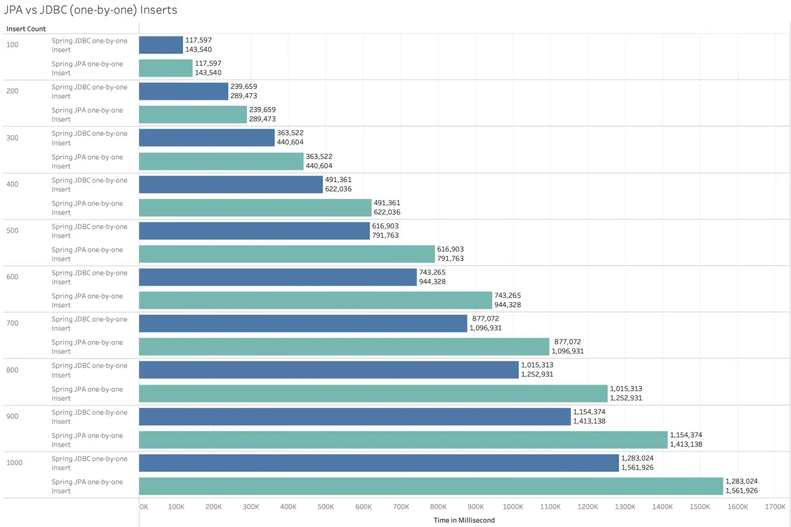
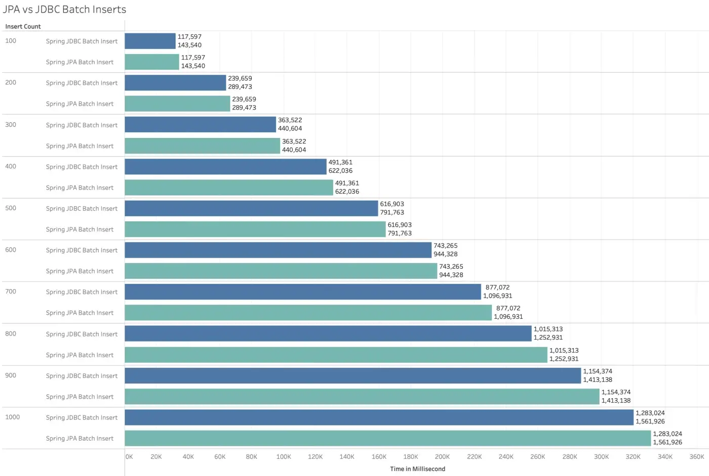

INDEX
- Batch
- JPA batch
- JDBC batch
- 일반적인 성능비교
- 그래서 Chatting을 insert할 때는 어떤 방식이 좋을까?
- 이슈비교
- 그 외
- 종합 성능비교 그래프
- 결론
기능 설명 및 시연영상 https://www.youtube.com/watch?v=3VqwZ17XyEQ&t=237s
현재는 4.2.0 버전이며 프론트 서버까지 모두 완료되었다!
이후, 실제 트래픽양이 많은 chat을 이전에 만들어둔 Go 프로그램으로 테스트 해보았더니, 아래와 같이 성능결과가 암울했다. 약 10K개의 채팅을 수용하는데 80초가 소요된 것이다.
1
2
3
4
5
6
test-multiple-http-request | Request url: http://127.0.0.1:8060/chat/chat
test-multiple-http-request | The number of HTTP Requests: 10000
test-multiple-http-request | The number of threads: 100
test-multiple-http-request | Proceeding! Please wait until getting all the responses
test-multiple-http-request | Elapsed Time: 80.02316758
test-multiple-http-request | Response status code: 200 , How many?: 10000
그래서 우리는 Batch를 사용해서 이를 개선해볼 것이다.
Batch
배치는 특정 사이즈만큼 리스트에 저장하고 송출하는 방식이다. 여기는 JPA, JDBC 두 가지 방식이 있는데, 아래는 각각을 설명한다.
JPA batch
JPA의 batch는 여러개의 TX를 모아서 전송함으로써 네트워크 딜레이 로드를 줄이는 방식이다.
1
2
3
4
5
6
7
8
9
10
11
12
13
14
15
16
17
-- JPA Batch=4 설정
INSERT INTO PRODUCT
(TITLE, CREATED_TS, PRICE)
VALUES
('test1', LOCALTIMESTAMP, 100.10);
INSERT INTO PRODUCT
(TITLE, CREATED_TS, PRICE)
VALUES
('test2', LOCALTIMESTAMP, 101.10);
INSERT INTO PRODUCT
(TITLE, CREATED_TS, PRICE)
VALUES
('test3', LOCALTIMESTAMP, 102.10);
INSERT INTO PRODUCT
(TITLE, CREATED_TS, PRICE)
VALUES
('test4', LOCALTIMESTAMP, 103.10);
JDBC batch
JPA의 batch는 그냥 여러개의 TX를 모아서 전송하는 느낌인 반면에, JDBC Batch는 실제 쿼리를 튜닝하여 좀더 로우 레벨에서 insert한다.
1
2
3
4
5
6
7
8
-- JDBC Batch=4 사용
INSERT INTO PRODUCT
(TITLE, CREATED_TS, PRICE)
VALUES
('test1', LOCALTIMESTAMP, 100.10),
('test2', LOCALTIMESTAMP, 101.10),
('test3', LOCALTIMESTAMP, 102.10),
('test4', LOCALTIMESTAMP, 104.10);
일반적인 성능비교
1
2
3
4
5
6
7
8
9
10
11
12
13
14
15
16
17
18
19
20
21
22
23
24
25
26
27
28
29
--------------------------------------------------
Regular inserts | 1 | 15ms
Batch inserts | 1 | 10ms
Total gain: 33 %
--------------------------------------------------
Regular inserts | 10 | 3ms
Batch inserts | 10 | 2ms
Total gain: 33 %
--------------------------------------------------
Regular inserts | 100 | 42ms
Batch inserts | 100 | 10ms
Total gain: 76 %
--------------------------------------------------
Regular inserts | 1000 | 141ms
Batch inserts | 1000 | 19ms
Total gain: 86 %
--------------------------------------------------
Regular inserts | 10000 | 827ms
Batch inserts | 10000 | 104ms
Total gain: 87 %
--------------------------------------------------
Regular inserts | 100000 | 5093ms
Batch inserts | 100000 | 981ms
Total gain: 80 %
--------------------------------------------------
Regular inserts | 1000000 | 50482ms
Batch inserts | 1000000 | 9821ms
Total gain: 80 %
--------------------------------------------------
JPA batch는 1초에 약 2만개의 insert 쿼리를 처리할 수 있는 반면에, JDBC batch는 약 1초에 10만개의 insert 쿼리를 처리할 수 있다.
그래서 Chatting을 insert할 때는 어떤 방식이 좋을까?
이슈비교
- 캐싱 성능
- JPA 승리. 현재 Chatting이 많을 경우 이를 불러오는 부분에서 많은 네트워크 로드가 걸린다. JPA는 영속성을 활용해서 캐싱을 지원하기에 성능이득을 볼 수 있다.
- 네트워크 로드
- JPA, JDBC 둘 다 쿼리를 모아두었다가 보내기에 비슷하다. 다만 JDBC의 패킷 크기가 조금 작다.
- DB 병렬지원 시 성능
- 만약 DB가 병렬지원한다면, JPA 승리. 개별쿼리를 가지기 떄문에 DB가 병렬로 실행시킬 수 있기 때문이다. postgres는
max_parallel_workers로 병렬쿼리실행을 지원한다.
- 만약 DB가 병렬지원한다면, JPA 승리. 개별쿼리를 가지기 떄문에 DB가 병렬로 실행시킬 수 있기 때문이다. postgres는
- DB 컨트롤 능력
- JDBC 승리. JPA도 물론 네이티브 쿼리 및 여러가지 설정을 할 순 있지만, 기본적으로 JDBC 위에서 동작하기 떄문에 로우 레벨인 JDBC가 승리할 수 밖에 없다.
- 쿼리 실행 속도
- JDBC 승리. DB 병렬을 극한까지 사용하지 않으면 JDBC 승리.
그 외
- fine-grain
- JPA 승리. JDBC 보다 사용하기가 훨씬 간편하다.
- 동시성 문제발생?
- JDBC batch 사용하기 위해서는 요청을 차곡차곡 쌓을 리스트가 필요하다. 이 때, 리스트는 thread safe해야한다. 그 이유는 아래와 같다. 그리고 여기서 병목현상이 발생할 수 있다.
우리는 @Service 어노테이션을 사용하여 싱글톤으로 생성했다. 얘네는 자원을 힙에다 두고 공유하는 방식이다. 그런데 우리는 멀티 스레드로 서비스의 공유자원을 사용하기때문에 동시접근 문제가 발생한다. 따라서 batch size만큼 저장하는 리스트는 mutex가 지원되는 리스트를 사용해야만 한다.
종합 성능비교 그래프
- Regular 
- Batch 
실험환경
- Batch=100 사용
- 레코드는 synchronously 하게 배치에 추가된다
다 따지고 봤을 때, JDBC가 약 4%정도 성능이 뛰어나다.
reference https://medium.com/walmartglobaltech/a-cruncher-choice-jpa-or-jdbc-85c589f584a9
결론
필자는 JPA를 사용할 것이다. 아무래도 채팅기록을 받아올 때, 캐싱된 값을 받아올 수 있어 성능이점을 가지기 때문이다. 그리고 무엇보다도 쓰기가 정말정말 편하기 때문에 JPA를 선택하였다. 다음 포스팅에서는 JPA batch를 통한 성능개선 방법을 소개한다.